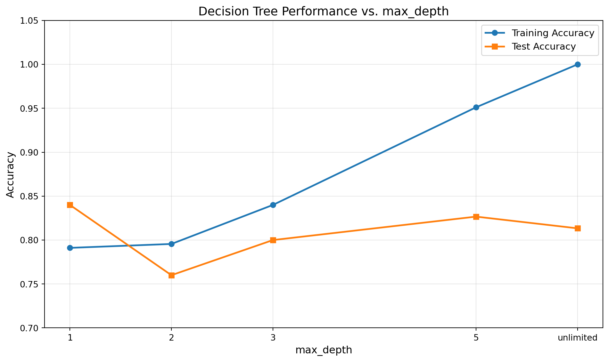
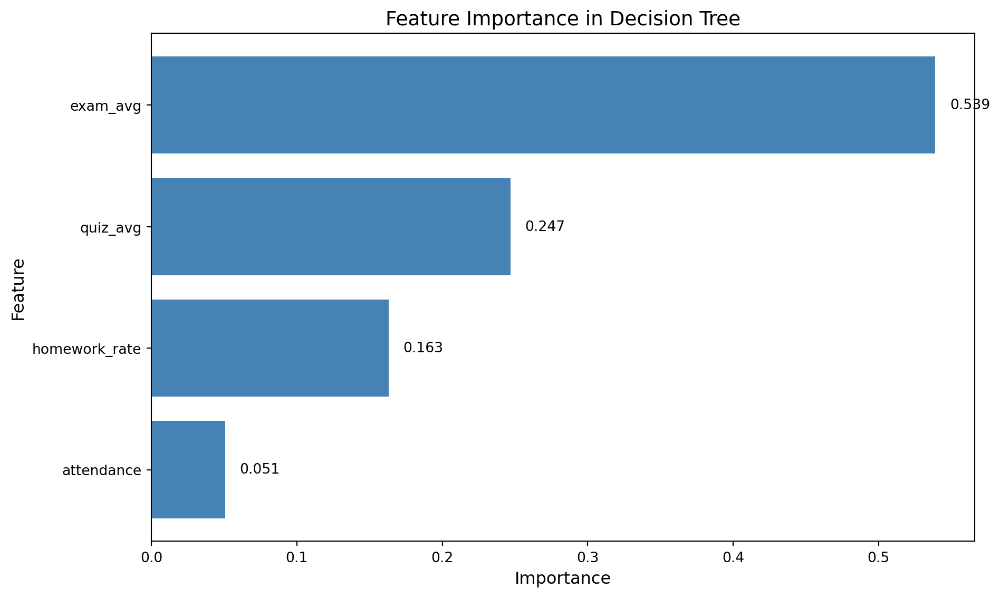

So far in this course, we’ve explored three different approaches to supervised learning:
Week 2 - k-Nearest Neighbors (kNN): - Stores all training data and searches through it at prediction time - Makes predictions by finding similar examples and voting (or averaging) - Controlled by k: how many neighbors to consider
Week 3 - Linear Models (Ridge Regression, Logistic Regression): - Learns a formula during training: a weighted combination of features - Makes predictions by plugging values into the formula - Controlled by alpha or C: how much regularization to apply
This Week - Decision Trees: - Learns a hierarchy of questions during training (a tree structure) - Makes predictions by asking those questions in order and following branches - Controlled by max_depth: how many questions can be asked in sequence
What Are Decision Trees?
Decision trees work like the game 20 Questions. When trying to identify something (an animal, object, or person), you ask yes/no questions where each answer leads to another question, until you reach a final decision:
“Does it have feathers?” → Yes → “Can it fly?” → No → Penguin!
“Does it have feathers?” → No → “Does it live in water?” → Yes → Dolphin!
A decision tree follows this same pattern. It asks a series of questions about the features, and each answer leads to another question, until finally reaching a prediction.
Key characteristics: - The model is a tree structure with questions at each node - Each question splits the data based on one feature - The tree keeps asking questions until it reaches a leaf (final decision) - During training, the algorithm figures out which questions to ask and in what order
What Makes Decision Trees Different?
Aspect
kNN
Linear Models
Decision Trees
What it learns
Nothing (stores data)
A formula with weights
A hierarchy of questions
Training process
Just stores data
Finds optimal weights
Builds tree by asking questions
How it predicts
Searches for neighbors
Applies formula
Follows tree branches
Interpretability
Hard to explain why
Can see feature weights
Can visualize decision path
Data requirements
Needs scaling
Needs scaling
No scaling needed!
One of the biggest advantages of decision trees: you don’t need to scale or normalize your data. Since each question only looks at one feature at a time (“Is attendance > 80%?”), the scale of other features doesn’t matter.
What This Demo Covers
This demo covers: - Building and training a decision tree classifier - Understanding how the max_depth parameter controls tree complexity - Interpreting feature importance to see what the tree learned - Comparing decision trees to the other algorithms we’ve learned - Knowing when to use decision trees vs other approaches
The textbook then shows you: - How to visualize the actual tree structure (with graphviz) - More parameters for controlling tree complexity - Why trees can overfit on complex data - Ensemble methods (Random Forests and Gradient Boosting) that combine many trees to make even more powerful models
Part 1: Creating the Dataset
This section continues using the student performance dataset from previous weeks. Using the same dataset helps focus on understanding the new algorithm without having to learn a new domain.
The dataset contains 300 students, each with four features: attendance percentage, homework completion rate, quiz average, and exam average. The target predicts whether each student passes or fails the course.
import numpy as npimport pandas as pdimport matplotlib.pyplot as pltfrom sklearn.model_selection import train_test_split# Create reproducible random datarng = np.random.default_rng(42)n =300df = pd.DataFrame({"attendance": rng.integers(60, 101, n),"homework_rate": rng.integers(50, 101, n),"quiz_avg": rng.integers(40, 101, n),"exam_avg": rng.integers(40, 101, n),})# Create final score with a realistic formula plus noisebase_score = (0.2*df["homework_rate"] +0.3*df["quiz_avg"] +0.5*df["exam_avg"])noise = rng.normal(0, 5, n)df["final_score"] = (base_score + noise).round(0)# Create pass/fail classification targetdf["pass_fail"] = np.where(df["final_score"] >=70, "pass", "fail")print(f"Dataset size: {len(df)} students")print(f"Features: attendance, homework_rate, quiz_avg, exam_avg")print(f"Target: pass_fail (pass if final_score >= 70, otherwise fail)\n")print("Class distribution:")print(df["pass_fail"].value_counts())print()df.head(10)
Dataset size: 300 students
Features: attendance, homework_rate, quiz_avg, exam_avg
Target: pass_fail (pass if final_score >= 70, otherwise fail)
Class distribution:
pass_fail
pass 157
fail 143
Name: count, dtype: int64
attendance
homework_rate
quiz_avg
exam_avg
final_score
pass_fail
0
63
68
77
40
63.0
fail
1
91
92
87
42
64.0
fail
2
86
50
85
53
64.0
fail
3
77
95
48
93
68.0
fail
4
77
77
90
67
70.0
pass
5
95
57
72
83
73.0
pass
6
63
65
59
65
58.0
fail
7
88
78
71
50
65.0
fail
8
68
66
98
62
84.0
pass
9
63
55
92
45
55.0
fail
Understanding the code:
Importing libraries: - numpy (abbreviated as np) provides tools for generating random numbers and doing numerical operations - pandas (abbreviated as pd) lets us work with tables of data called DataFrames - matplotlib.pyplot (abbreviated as plt) is for creating visualizations - train_test_split from scikit-learn will help us split data into training and test sets
Creating reproducible random data: - rng = np.random.default_rng(42) creates a random number generator with a fixed seed (42). Using a seed means we get the same “random” numbers every time we run this code, making results reproducible. - n = 300 sets our dataset size to 300 students
Building the DataFrame: - pd.DataFrame({...}) creates a table with four columns - rng.integers(60, 101, n) generates 300 random whole numbers between 60 and 100 (inclusive) - Each column represents one feature: attendance percentage, homework completion rate, quiz average, and exam average - After this step, we have a table where each row is one student and each column is one measurement
Creating a realistic final score: - base_score = (0.2*df["homework_rate"] + 0.3*df["quiz_avg"] + 0.5*df["exam_avg"]) calculates a weighted average where exams count for 50%, quizzes for 30%, and homework for 20%. Notice attendance isn’t used in the formula. - noise = rng.normal(0, 5, n) generates random variation from a bell curve centered at 0 with a spread of 5 points. This represents unpredictable factors we can’t measure: maybe a student had a headache during the exam, or got lucky on multiple choice questions, or studied extra hard one week. - df["final_score"] = (base_score + noise).round(0) adds the random variation to the base score and rounds to whole numbers
Creating the classification target: - df["pass_fail"] = np.where(df["final_score"] >= 70, "pass", "fail") creates a binary label where students with final_score ≥ 70 are marked as “pass”, otherwise “fail” - This is our target variable: what the model will learn to predict
Understanding the data:
Each row represents one student. The features tell us about their performance throughout the semester: - attendance: What percentage of classes they attended (60-100%) - homework_rate: What percentage of homework they completed (50-100%) - quiz_avg: Their average quiz score (40-100) - exam_avg: Their average exam score (40-100)
The target variable pass_fail tells us the outcome: - “pass” if their final score was 70 or above - “fail” if their final score was below 70
The goal: Build a decision tree that learns to predict pass/fail based on these four features.
Part 2: Building Your First Decision Tree
This section builds a decision tree classifier following the same workflow from previous weeks: 1. Split data into training and test sets 2. Create the model 3. Train it on training data 4. Evaluate it on both training and test data
Step 1: Prepare the data
# Select features (X) and target (y)X = df[["attendance", "homework_rate", "quiz_avg", "exam_avg"]]y = df["pass_fail"]# Split into training and test sets (75% train, 25% test)X_train, X_test, y_train, y_test = train_test_split( X, y, test_size=0.25, random_state=42)print(f"Training set size: {len(X_train)} students")print(f"Test set size: {len(X_test)} students")
Training set size: 225 students
Test set size: 75 students
Why split the data?
Remember from Week 2: Splitting the data measures generalization. The training set is used to build the model (train the tree), and the test set checks if the model works on students it has never seen before.
If the model performs much better on training data than test data, it means the model memorized the training examples rather than learning general patterns.
Step 2: Create and train the decision tree
from sklearn.tree import DecisionTreeClassifier# Create a decision tree with default settingstree = DecisionTreeClassifier(random_state=42)# Train the tree on the training datatree.fit(X_train, y_train)print("Decision tree trained successfully!")print(f"Tree depth: {tree.get_depth()}")print(f"Number of leaves: {tree.get_n_leaves()}")
Decision tree trained successfully!
Tree depth: 7
Number of leaves: 39
Understanding the code:
Importing the classifier: - from sklearn.tree import DecisionTreeClassifier imports the decision tree class from scikit-learn - Similar to how we imported Ridge and LogisticRegression in Week 3
Creating the model: - tree = DecisionTreeClassifier(random_state=42) creates a new tree with default settings - random_state=42 ensures reproducible results (same as the random seed in data generation) - Without any parameters specified, the tree can grow until all leaves are pure (perfectly separate the classes)
Training the model: - tree.fit(X_train, y_train) trains the tree on the training data - This is where the tree building happens - the algorithm finds the best questions to ask - The .fit() method modifies the tree object to store the learned structure
Inspecting the trained tree: - tree.get_depth() returns how deep the tree grew (longest path from root to any leaf) - tree.get_n_leaves() returns how many final decision points (leaves) exist - These methods help us understand the complexity of the learned tree
What happens during training:
When .fit() is called, the decision tree algorithm: 1. Looks at all the features and finds the best question to ask first (the one that best separates pass from fail) 2. Splits the students into two groups based on that question 3. For each group, it repeats: find the best question, split again 4. Keeps splitting until it reaches a stopping point
The algorithm tries every possible question it could ask (“Is attendance > 65%?”, “Is attendance > 66%?”, “Is quiz_avg > 50?”, etc.) and picks the one that best separates the classes.
Understanding tree depth: - Depth = the longest path from the root (first question) to any leaf (final decision) - The depth value tells us the maximum number of questions the tree can ask in a row for any student
Understanding leaves: - Leaves are the end points of the tree where predictions are made - Each leaf contains some training students and predicts the majority class in that leaf
Step 3: Evaluate the model
# Calculate accuracy on training datatrain_accuracy = tree.score(X_train, y_train)print(f"Training accuracy: {train_accuracy:.3f}")# Calculate accuracy on test datatest_accuracy = tree.score(X_test, y_test)print(f"Test accuracy: {test_accuracy:.3f}")
Training accuracy: 1.000
Test accuracy: 0.813
Interpreting the results:
The training accuracy shows how well the tree predicts the students it was trained on. The test accuracy shows how well it predicts new students it has never seen.
Perfect or near-perfect training accuracy (like 1.000 or 0.99+) means the tree has grown deep enough to memorize most or all of the training examples. This is common with decision trees when depth isn’t limited.
The test accuracy is what really matters - it indicates if the model learned general patterns or just memorized training data.
Note: On this clean synthetic data, the tree might perform well even without depth restrictions. With real-world messy data, unlimited depth often leads to overfitting. The textbook demonstrates this with datasets like Breast Cancer and make_moons.
Step 4: Making predictions
This section examines how the tree makes predictions for a few test students:
# Look at first 5 test studentssample_students = X_test.head(5)sample_predictions = tree.predict(sample_students)actual_results = y_test.head(5)# Create a comparison DataFramecomparison = pd.DataFrame({"attendance": sample_students["attendance"].values,"homework_rate": sample_students["homework_rate"].values,"quiz_avg": sample_students["quiz_avg"].values,"exam_avg": sample_students["exam_avg"].values,"predicted": sample_predictions,"actual": actual_results.values})print("Sample predictions on test students:")print(comparison)print("\n✓ = correct prediction, ✗ = incorrect prediction")for i, row in comparison.iterrows(): symbol ="✓"if row["predicted"] == row["actual"] else"✗"print(f"Student {i}: {symbol}")
For each student, the tree: 1. Starts at the root and asks the first question (“Is exam_avg > 65?”) 2. Based on the answer, moves to the left or right branch 3. Asks another question at that node 4. Continues following branches until reaching a leaf 5. Predicts the class that most training students in that leaf had
The tree doesn’t use a formula like linear models. It follows a path of questions until it reaches a decision.
Part 3: Exploring the max_depth Parameter
The most important parameter for controlling decision tree complexity is max_depth. It controls how many questions the tree is allowed to ask in sequence.
Understanding depth levels: - Depth 1: Can only ask ONE question total (“Is exam_avg > 70?”) - Depth 2: Can ask a question, then ask ONE follow-up question for each answer - Depth 3: Can ask three questions in a row - No limit: Can ask as many questions as needed to perfectly separate the training data
Deeper trees = more questions = more detailed decisions = more complex model
Shallower trees = fewer questions = simpler decisions = simpler model
This section trains trees with different depth limits and compares them:
# Train trees with different max_depth valuesdepths = [1, 2, 3, 5, None] # None means no limitresults = []for depth in depths:# Create and train a tree with this depth tree = DecisionTreeClassifier(max_depth=depth, random_state=42) tree.fit(X_train, y_train)# Evaluate on both training and test sets train_acc = tree.score(X_train, y_train) test_acc = tree.score(X_test, y_test)# Store results depth_label ="unlimited"if depth isNoneelse depth results.append({"max_depth": depth_label,"num_leaves": tree.get_n_leaves(),"training_accuracy": train_acc,"test_accuracy": test_acc })# Display results as a tableresults_df = pd.DataFrame(results)print("\nComparison of trees with different max_depth:")print(results_df.to_string(index=False))
Comparison of trees with different max_depth:
max_depth num_leaves training_accuracy test_accuracy
1 2 0.791111 0.840000
2 4 0.795556 0.760000
3 8 0.840000 0.800000
5 24 0.951111 0.826667
unlimited 39 1.000000 0.813333
Understanding the code:
Setting up the experiment: - depths = [1, 2, 3, 5, None] creates a list of different max_depth values to try - None means no depth limit - the tree can grow as deep as needed - results = [] creates an empty list to store results from each tree
Looping through depth values: - for depth in depths: repeats the process for each depth value - Each iteration trains a new tree with that specific depth limit
Creating and training each tree: - tree = DecisionTreeClassifier(max_depth=depth, random_state=42) creates a tree with the current depth limit - tree.fit(X_train, y_train) trains that tree on the training data - Each tree is independent - we’re not modifying the same tree
Evaluating each tree: - train_acc = tree.score(X_train, y_train) calculates accuracy on training data - test_acc = tree.score(X_test, y_test) calculates accuracy on test data - We evaluate on both sets to detect overfitting
Storing results: - depth_label = "unlimited" if depth is None else depth converts None to the string “unlimited” for readability - results.append({...}) adds a dictionary with all results for this depth to the list - tree.get_n_leaves() gets the number of leaves from the trained tree
Creating the comparison table: - results_df = pd.DataFrame(results) converts the list of dictionaries into a DataFrame - This creates a table where each row is one tree (one depth value) - .to_string(index=False) displays the table without row numbers
Interpreting the table:
Look at the patterns: 1. Number of leaves increases with depth - more questions → more possible outcomes 2. Training accuracy generally increases with depth - more questions → better fit to training data 3. Test accuracy doesn’t always increase - in fact, depth=1 achieves the highest test accuracy (0.840) on this dataset
Key insights: - On this clean synthetic dataset, a very simple tree (depth=1) performs surprisingly well on test data. This happens because the data has clear, simple patterns - asking just one question (“Is exam_avg high enough?”) captures most of the signal. - A tree with unlimited depth achieves perfect training accuracy (1.000) but lower test accuracy (0.813), showing some overfitting. - Depth=5 provides a good balance with strong test performance (0.827) and more detailed decision-making.
Important note: This pattern is specific to this clean, synthetic dataset where relationships are straightforward. On real-world messy data (like the Breast Cancer dataset in the textbook), very shallow trees typically underfit, and you’ll see more obvious benefits from moderate depths like 3-5.
This is similar to the k parameter in kNN and the alpha/C parameters in linear models - they all control the balance between simplicity and complexity.
Visualizing the comparison
# Create a visualization comparing train vs test accuracyfig, ax = plt.subplots(figsize=(10, 6))# Convert depth labels to numeric for plotting (unlimited → -1 for positioning)x_positions = [1, 2, 3, 5, 6] # Position "unlimited" at 6x_labels = ["1", "2", "3", "5", "unlimited"]ax.plot(x_positions, results_df["training_accuracy"], marker='o', label='Training Accuracy', linewidth=2)ax.plot(x_positions, results_df["test_accuracy"], marker='s', label='Test Accuracy', linewidth=2)ax.set_xlabel("max_depth", fontsize=12)ax.set_ylabel("Accuracy", fontsize=12)ax.set_title("Decision Tree Performance vs. max_depth", fontsize=14)ax.set_xticks(x_positions)ax.set_xticklabels(x_labels)ax.legend(fontsize=11)ax.grid(True, alpha=0.3)ax.set_ylim([0.7, 1.05])plt.tight_layout()plt.show()

What this visualization shows:
This plot shows the relationship between tree depth and performance: - Left side (depth=1): Very simple tree with surprisingly high test accuracy (0.840) - one good question captures most of the pattern - Middle (depth=3-5): More complex trees with strong test accuracy, providing more detailed decision boundaries - Right side (unlimited): Complex tree with perfect training accuracy (1.000) but lower test accuracy (0.813), showing overfitting
On this dataset, depth=1 actually achieves the best test accuracy. This demonstrates that simpler models can outperform complex ones when the data has clear patterns. The unlimited depth tree memorizes training data (perfect training accuracy) but doesn’t generalize as well.
Note about this dataset: This student performance data has clean, straightforward relationships. On real-world messy data (like the Breast Cancer dataset in the textbook), very shallow trees typically underfit and you’ll see clearer benefits from moderate depths. The textbook shows more dramatic overfitting patterns with complex, noisy datasets.
Part 4: Understanding Feature Importance
One of the most useful aspects of decision trees is feature importance - they indicate which features matter most for making predictions.
Feature importance is a number between 0 and 1 for each feature: - 0 means the feature was never used in the tree - 1 would mean this feature alone perfectly separates the classes - Higher values mean the feature is more important - The importances always sum to 1.0
This section extracts and visualizes feature importance from one of the trees:
# Train a tree with reasonable depth for interpretationtree = DecisionTreeClassifier(max_depth=5, random_state=42)tree.fit(X_train, y_train)# Extract feature importancesimportances = tree.feature_importances_feature_names = X_train.columns# Display as a tableimportance_df = pd.DataFrame({"Feature": feature_names,"Importance": importances}).sort_values("Importance", ascending=False)print("\nFeature Importance Rankings:")print(importance_df.to_string(index=False))print(f"\nTotal importance: {importances.sum():.3f} (should always be 1.0)")
Feature Importance Rankings:
Feature Importance
exam_avg 0.538999
quiz_avg 0.247003
homework_rate 0.163215
attendance 0.050783
Total importance: 1.000 (should always be 1.0)
Understanding the code:
Training a tree for analysis: - tree = DecisionTreeClassifier(max_depth=5, random_state=42) creates a tree with limited depth - We use max_depth=5 to get a reasonably complex but not overfitted tree - tree.fit(X_train, y_train) trains this tree on the training data
Extracting feature importance: - importances = tree.feature_importances_ gets the importance score for each feature - This is a built-in property that scikit-learn calculates after training - Returns a numpy array with one value per feature
Getting feature names: - feature_names = X_train.columns extracts the column names from our DataFrame - We need these to label which importance value corresponds to which feature - Without this, we’d just have numbers with no context
Creating a readable table: - pd.DataFrame({...}) creates a DataFrame pairing feature names with their importance values - "Feature": feature_names creates the first column with feature names - "Importance": importances creates the second column with importance scores - .sort_values("Importance", ascending=False) sorts so the most important features appear first
Displaying results: - .to_string(index=False) prints the table without row numbers - importances.sum() adds up all importance values to verify they sum to 1.0 - The sum should always be 1.0 - this is a good sanity check
What these numbers mean:
Feature importance indicates how much each feature contributed to the tree’s decisions: - exam_avg has importance 0.539, meaning about 54% of the tree’s decision-making power comes from exam scores - attendance has importance 0.051, meaning attendance was rarely used or had weak splits
The tree calculates this by looking at: 1. How often each feature was used for splits 2. How much each split improved the predictions 3. How many training samples were affected by each split
Features used higher in the tree (for the first questions) and features that create good separations get higher importance scores.
Visualizing feature importance
# Create a horizontal bar plotfig, ax = plt.subplots(figsize=(10, 6))# Sort features by importance for better visualizationsorted_idx = np.argsort(importances)sorted_features = feature_names[sorted_idx]sorted_importances = importances[sorted_idx]# Create barsax.barh(range(len(sorted_features)), sorted_importances, color='steelblue')ax.set_yticks(range(len(sorted_features)))ax.set_yticklabels(sorted_features)ax.set_xlabel("Importance", fontsize=12)ax.set_ylabel("Feature", fontsize=12)ax.set_title("Feature Importance in Decision Tree", fontsize=14)# Add value labels on barsfor i, v inenumerate(sorted_importances): ax.text(v +0.01, i, f'{v:.3f}', va='center')plt.tight_layout()plt.show()

Interpreting the feature importance plot:
This visualization shows which features the tree considers most important for predicting pass/fail: - Features on top (longer bars) are more important - Features on bottom (shorter bars) are less important
In this student data, exam_avg and quiz_avg are likely most important, which makes sense - these are strong predictors of the final grade. Homework and attendance might have lower importance if they’re less directly related to passing.
Comparing to Linear Model Coefficients
Remember from Week 3: Linear models also show feature importance through their coefficients (weights). How do these compare?
Decision Tree Feature Importance: - Always positive (between 0 and 1) - Indicates how much the feature matters - Does NOT indicate direction (whether high values mean pass or fail) - Changes based on tree structure and splits
Linear Model Coefficients: - Can be positive or negative - Positive = “as this feature increases, prediction increases” - Negative = “as this feature increases, prediction decreases” - Shows both importance AND direction
Both are useful. Trees indicate “what matters most” while linear models indicate “what matters and how.”
Part 5: Comparing Decision Trees to Other Models
This section compares decision trees to the other algorithms learned in previous weeks:
Decision Trees vs. k-Nearest Neighbors (kNN)
Aspect
kNN
Decision Trees
Training time
Fast (just stores data)
Slower (builds tree structure)
Prediction time
Slow (searches all data)
Fast (follows one path)
Memory usage
High (stores all training data)
Low (stores tree structure only)
Interpretability
Hard to explain
Easy (can visualize tree)
Data scaling
Required
Not required
Parameters
k (number of neighbors)
max_depth, max_leaves, etc.
Decision Trees vs. Linear Models
Aspect
Linear Models
Decision Trees
Model type
Global formula
Local rules
Decision boundary
Straight line
Axis-parallel rectangles
Feature interactions
Must be specified
Automatic
Interpretability
Can see coefficients
Can visualize tree
Data scaling
Required
Not required
Overfitting tendency
Lower (with regularization)
Higher (without limits)
When to Use Decision Trees
Decision trees work well when: - Features are on different scales (no scaling needed) - You have a mix of different feature types (numeric, categorical) - You need an interpretable model you can explain to non-technical people - Feature interactions matter (trees capture these automatically) - You want to see which features are most important
Use other models when: - You need the absolute best accuracy (ensembles like Random Forests often beat single trees) - Your data is high-dimensional and sparse (like text) - linear models often work better - You have very little training data - simpler models might generalize better
Conclusion
Key Takeaways
Decision trees learn a hierarchy of if/else questions during training, then follow that path to make predictions
The max_depth parameter controls tree complexity: deeper trees can ask more questions
Feature importance shows which features the tree used most for making decisions
Trees don’t require feature scaling, unlike kNN and linear models
On clean synthetic data, trees may not show obvious overfitting; real-world messy data often does
Trees are easy to interpret but can overfit on complex data without proper depth limits
The Challenge with Single Decision Trees
Single decision trees have one major weakness: they tend to overfit on complex data. When you have noisy, real-world data, trees often memorize training examples rather than learning general patterns.
On this clean synthetic student data, overfitting isn’t a major problem. But on datasets like: - Medical diagnosis (lots of noise and uncertainty) - Customer behavior (many random factors) - Image classification (high-dimensional, complex patterns)
…single trees often struggle.
Enter Ensembles: The Solution
The textbook introduces two powerful ensemble methods that fix this problem by combining many trees:
Random Forests: - Builds hundreds of trees, each slightly different - Each tree sees a random subset of the data and features - Averages their predictions - Result: Much more robust, less overfitting
Gradient Boosting: - Builds trees one at a time - Each new tree focuses on correcting the previous tree’s mistakes - Result: Often the best performance, but requires careful tuning
These ensemble methods keep all the benefits of trees (no scaling, interpretable, handles mixed features) while dramatically reducing overfitting.
Further Reading in the Textbook
As you read Chapter 2’s decision tree section, pay attention to:
Tree Visualization (export_graphviz)
How to actually see the tree structure
Understanding nodes, branches, and leaves visually
Key limitation: can’t extrapolate beyond training range
Overfitting Examples
The make_moons dataset showing clear overfitting
Breast Cancer dataset with 100% training accuracy
Why limiting depth helps
Random Forests & Gradient Boosting
These are where trees become truly powerful
Currently among the most widely used ML methods
Often win Kaggle competitions
The demo provided the practical foundation - how to build and use decision trees. The textbook provides the complete picture - when they fail, how to fix those failures, and how to make them even more powerful.